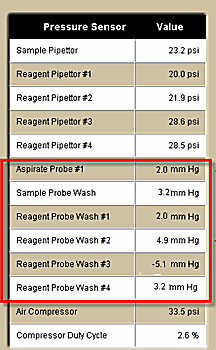

Testing Vacuum System During Troubleshooting
This procedure describes how to test the vacuum sensor and the vacuum system during troubleshooting of the vacuum and wash buffer systems.
-
Test the vacuum sensor.
- Select Device Diagnostics > Analog Devices > Analog Data.
-
Observe the Pressure Sensor Value for the problematic pipettor or wash collar circuit.

Note: Aspirate Probe #1 refers to the wash collar and duck-bill valve pressure sensor. -
Verify that the pressure sensor reads 0 ±10 mm Hg. If the pressure sensor is outside this range, replace the vacuum/pressure sensor interface PCB in the fluidics drawer.
Individual pressure sensors are not replaceable. The entire PCB must be replaced
- If the pressure sensor is within the suggested range, select OK to exit the Analog Data screen.
-
Test the vacuum system.
- Select Digital Devices > Digital Outputs.
- Power on the vacuum pump.
-
Select the Output Name, and then select
Toggle Output Value.
Device Digital Output Name Reagent Pipettor Wash Tower 1
Reagent Pipettor Wash Tower 2
VacuumPump1 Reagent Pipettor Wash Tower 3
Reagent Pipettor Wash Tower 4
VacuumPump2 Sample Pipettor Wash Tower
Wash Collar Manifold / Duckbill
VacuumPump3 Note: Vacuum Pump 2, Reagent Pipettor Wash Tower 3, and Reagent Pipettor Wash Tower 4 are not on the DxI 600. - Select Done to exit the Digital Outputs screen.
-
Select
Analog Devices
> Analog Data.
- If the problematic device is a wash tower, then push the pipettor towards the rear of the instrument.
- If the problematic device is a wash collar manifold, then remove Aspirate Probe 1 from the duck-bill valve.
- Place a gloved finger over the wash tower or wash collar manifold and allow the vacuum pressure to build as high as possible.
-
View the pressure sensor for the sealed device.
If the pressure sensor vacuum is Then 315 mm Hg or more Exit the vacuum test. less than 315 mm Hg Check for: - Defective duck-bill valve.
- Cracked wash collar manifold.
- Swapped vacuum pump connections. If the connections were swapped, recheck the pressure.
- Vacuum tubing leak. Use a hemostat to eliminate leaks.
- A fitting leak. Use a hemostat to eliminate leaks.
- Vacuum sensor issue. Swap the connections to verify vacuum sensor issue.
- Defective wash tower nozzle. Inspect for a missing o-ring.
- Kinked vacuum dampener tubing.
-
Exit the vacuum test.
- Select Done > Digital Devices > Digital Outputs to exit the Analog Data screen and return to the Digital Outputs screen.
- Power off the vacuum pump. Select VacuumPump1, VacuumPump2 (DxI 800 only), or VacuumPump3 as the Output Name, and then select Toggle Output Value.
- Select Mechanics > Alignments .
- Home the pipettor that was moved or replace the aspirate probe that was removed.
- Prime the pipettor or dispense or aspirate probes.
-
If vacuum errors continue, then check for clots or obstructions in these locations:
- Tubing
- Wash tower
- Fittings
- Wash buffer delivery from the sample pump, precision pumps, wash pump, or wash tower peristaltic pumps.